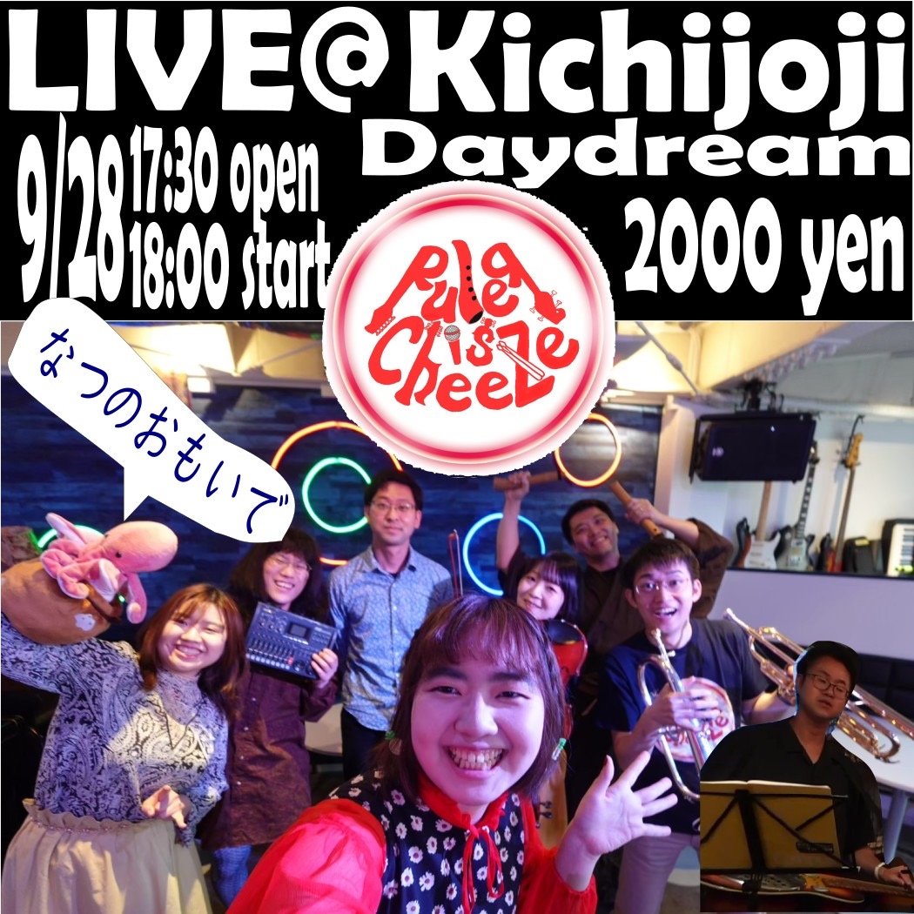

News
メンバー出演情報
11/23 SUNUnder the mat(中目黒駅)
すだま、やまだ、みんあゆ出演予定です。
詳細決まり次第お知らせします！
なつのおもいでありがとうございました！

Another News
- 2025/08/18LIVE
- Live at Kichijoji〜なつのおもいで〜終演しました
- 2025/08/07お知らせ
- YouTubeにてLive at Kichijoji〜はるうららかに〜の映像を公開しました
- 2024/09/22お知らせ
- YouTubeにてLive at Kichijoji(2024)の映像を公開しました
- 2024/07/07お知らせ
- webサイトを公開しました
リリース情報
- 2022/02/09Single
- 銀世界より
- 2021/04/07Album
- BLUE

About us
日常を音にする天然隠キャ系バンド。
青っぽい黒っぽい曲を自作自演しています。
2019年に札幌で結成。
現在は皆ばらばらに暮らしているが、時々どこかに集結して活動をしている。
ruler.is.cheeze@gmail.com
Member
すだま ［Drs.,その他,主犯］
スムースジャズ培養。アニソン錬磨。クラシック育ち。音が出るものが好き。
やまだ ［Gt.,黒幕］
アン直大好き。
もんてぃ(悠) ［尺八, flute, 刀］
るらちーの笛吹き男。クラシック生まれジャズ育ち。
AIサムライ。
ざきお ［Vo.,鍵ﾊﾓ.,Fd.］
ひかえめで機嫌のいいVo.。鍵ﾊﾓも弾きます。
ポップス生まれカントリー育ち。アイリッシュも好き。
KeyDとGの曲を聞かせとくと元気になる。水蛸とセルフィーしがち。
みんあゆ ［Ba.etc.］
ベースと鍵盤。弓が好き。フレットこわい。
JUDAI ［Trb.,etc.］
ときどきライブに現れる、超強力金管楽器奏者。
まりこ ［Vn］
クラシック生まれ、ブルーグラス育ちのフィドラー。
アイリッシュや民族音楽も大好き。
ベリーダンスも踊る生物オタク。
ハリー ［Db］
ハードボイルド・ドブロマン
鉄の共鳴板を抱きしめ スライドバーひとつで
夜の路地裏に音楽を響かせる
{kind=link}
{kind=link}
{kind=link}
{kind=link}
{kind=link}
{kind=link}
{kind=link}
{kind=link}
{kind=link}
{kind=link}
{kind=link}
{kind=link}
{kind=link}
{kind=link}
{kind=link}
{kind=link}